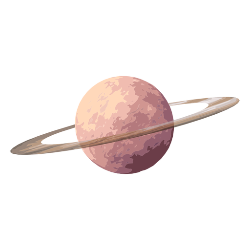

Saturno é o sexto planeta a partir do Sol e o segundo maior do Sistema Solar atrás de Júpiter. Pertencente ao grupo dos gigantes gasosos, possui cerca de 95 massas terrestres e orbita a uma distância média de 9,5 unidades astronômicas. Possui um pequeno núcleo rochoso, circundado por uma espessa camada de hidrogênio metálico e hélio. A sua atmosfera, também composta principalmente de hidrogênio, apresenta faixas com fortes ventos, cuja energia provém tanto do calor recebido do Sol quanto da energia irradiada de seu centro. Entretanto, estas bandas possuem aspecto pouco proeminente, com coloração que varia do marrom ao amarelado, devido à espessa névoa que envolve o planeta, além das camadas de nuvens. Sazonalmente surgem grandes sistemas de tempestades, além de vórtices permanentes existentes nos polos.
clique ara mais informações!